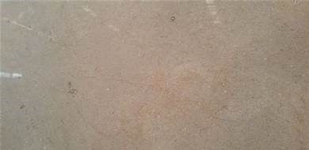

Tervera
It is known for its unique patterns and natural colors that give a luxurious touch to any space. The marble is highly durable, resistant to scratches, and requires low maintenance, making it an ideal choice for indoor applications.

Verona
Red Verona marble is a variety of limestone rock which takes its name from Verona in Northern Italy. Column-bearing lions in Red Verona marble. Santa Maria Maggiore, Bergamo.

Tippi
Pakistans Sun Tippi Marble can be used for exterior applications in hot climates. This marble is known for its durability and heat resistance, making it suitable for outdoor use in areas with high temperatures.
 Google